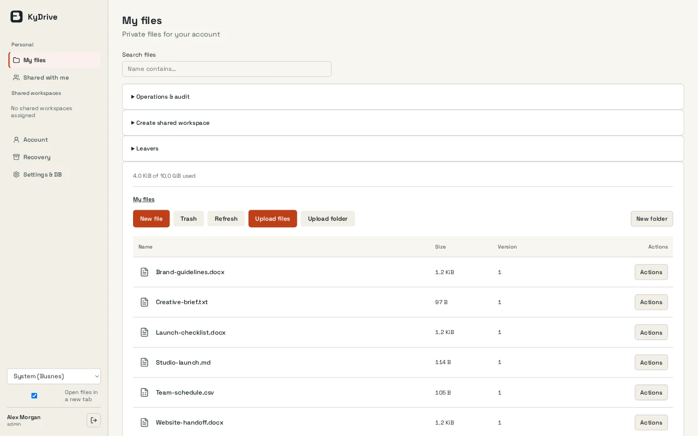

My files and shared workspaces
Every account gets a private workspace. Shared workspaces open to KyIdentity groups as reader, editor or manager, and access applies to everything inside.
KyDrive / Files & sharing
Private and shared workspaces with file versions, WebDAV access and optional in-browser document editing.
Open source (MIT) · TestedScreenshots
Example screens from local builds with fictional data. Appearance varies by version.

Inside KyDrive
Every account gets a private workspace. Shared workspaces open to KyIdentity groups as reader, editor or manager, and access applies to everything inside.
Create Word, Excel and PowerPoint files and edit them in Euro-Office. Markdown, text, CSV and OpenDocument files open there too, and every save becomes a new version.
Sketch plans and diagrams in an Excalidraw whiteboard that saves straight into your drive.
Deleted files go to trash, which empties after 90 days by default, and old versions are kept. Managers can purge, administrators can change the trash age and set retention on shared workspaces, and every action is audited.
Deactivating someone, removing them from a group or lowering their role ends their file access and open editor sessions.
Search your workspaces by file name or by the words inside documents, with the match highlighted. Use file and folder shares, optional expiring guest links, and WebDAV app passwords. The desktop client for Windows, macOS and Linux keeps chosen workspaces on your computer, works offline and syncs both ways with a compatible server.
How it fits together
KyDrive runs as a single instance on SQLite and local disk, with no high availability. Content search matches whole words, not prefixes or phrases, in the current version of Office, OpenDocument, plain text and, with Euro-Office, PDF files. Search covers your own workspaces, not items only shared with you, and Shared with me is not yet exposed over WebDAV or desktop sync. The search index is rebuilt after a restore rather than backed up, and administrators can turn content search off. The editor processes plaintext documents. Recovery needs the sealed metadata capsule and its matching bulk snapshot on independent storage; one does not replace the other. See the desktop client guide and restore runbook.
Read the Busnes.app privacy policy. For data on an independently operated installation, contact its operator.
Next step
The README covers installation, the document editor, sign-in, retention and recovery.